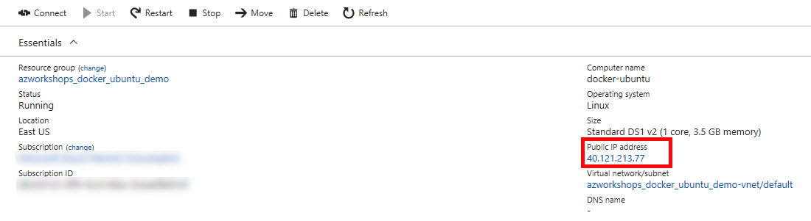

Create Virtual Machine
Objective
All of our work in this workshop, with the exception of the small Azure configuration at the end, will be performed on a single virtual machine. Let's get started creating that VM.
Create a Resource Group
In order to create resources, we need a Resource Group to place them in.
-
If you are not there already, go ahead and click on the Resource Groups
 in the Azure Portal to open the Resource Groups blade.
in the Azure Portal to open the Resource Groups blade. -
At the top of the Resource Groups blade, click on Add
 . This will open a panel that asks for some basic configuration settings.
. This will open a panel that asks for some basic configuration settings. -
Complete the configuration settings with the following:
- Resource group name: azworkshops_dockerfile_ubuntu_demo
- Subscription: <choose your subscription>
- Resource group location: <choose your location>
-
<Optional> Check Pin to dashboard at the bottom of the panel.
-
Click Create.
-
It should only take a second for the resource group to be created. Once you click create, the configuration panel closes and returns you to the list of available resource groups. Your recently created group may not be visible in the list. Clicking on Refresh
 at the top of the Resource Groups blade should display your new resource group.
at the top of the Resource Groups blade should display your new resource group.
NOTE: When you create a resource group, you are prompted to choose a location. Additionally, as you create individual resources, you will also be prompted to choose locations. The location of resource groups and their resources can be different. This is because resource groups store metadata describing their contained resources; and, due to some types of compliance that your company may adhere to, you may need to store that metadata in a different location than the resources themselves. For example, if you are a US-based company, you may choose to keep the metadata state-side while creating resources in foreign regions to reduce latency for the end-user.
Create a Virtual Machine
Now that we have an available resource group, let's create the actual Ubuntu server.
-
If you are not there already, go ahead and navigate to the azworkshops_dockerfile_ubuntu_demo resource group.
-
At the top of the blade for our group, click on Add
. This will display the blade for the Azure Marketplace allowing you to deploy a number of different solutions. -
We are interested in deploying an Ubuntu server. Therefore, in the Search Everything box, type in Ubuntu Server. This will display a couple of different versions. Since we want to deploy the latest stable version of Ubuntu, from the displayed options, choose Ubuntu Server 16.04 LTS.
-
This will display a blade providing more information about the server we have chosen. To continue creating the server, choose Create.
-
We are now prompted with some configuration options. There are 3 sections we need to complete and the last section is a summary of our chosen options.
-
Basics
- Name: dockerfile-ubuntu
- VM disk type: SSD
- Username: localadmin
- Authentication type: Password
(NOTE: You can choose SSH if you are familiar with how to set this up. If you are not, we will do this in a later workshop. However, for this workshop, Password authentication is sufficient.) - Password: Pass@word1234
- Confirm password: <same as above>
- Subscription: <choose your subscription>
- Resource group: Use existing - azworkshops_dockerfile_ubuntu_demo
- Location: <choose a location>
-
Size
- DS1_V2
-
Settings
-
Use managed disks: No
-
Storage account: (click on it & Create New)
- Name: dfubuntudata<random number> (ex. dfubuntudata123456)
(NOTE: This name must be globally unique, so it cannot already be used.) - Performance: Premium
- Replication: Locally-redundant storage (LRS)
- Name: dfubuntudata<random number> (ex. dfubuntudata123456)
-
Virtual network: <accept default> (e.g. (new) azworkshops_dockerfile_ubuntu_demo-vnet)
-
Subnet: <accept default> (e.g. default (172.16.1.0/24))
-
Public IP address: <accept default> (e.g. (new) dockerfile-ubuntu-ip)
-
Network security group (firewall): <accept default> (e.g. (new) dockerfile-ubuntu-nsg)
-
Extensions: No extensions
-
Availability set: None
-
Boot diagnostics: Enabled
-
Guest OS diagnostics: Disabled
-
Diagnostics storage account: (click on it & Create New)
- Name: dfubuntudiags<random number> (ex. dfubuntudiags123456)
- Performance: Standard
- Replication: Locally-redundant storage (LRS)
-
-
Summary (just click OK to continue)
-
This machine is relatively small, but with containers, it can still deliver some pretty impressive performance. Once scheduled, it may take a minute or two for the machine to be created by Azure. Once it has been created, Azure should open the machine's status blade automatically.
Connect to the Virtual Machine
Once your machine has been created, we can remotely connect to it using secure shell (SSH). These instructions assume that you do not have strong familiarity with SSH and/or that you have no built-in SSH client in your local OS. For this reason, we will be using the PuTTY client we downloaded earlier for the workshop. However, if you are more comfortable using another Telnet/SSH client (e.g. MacOS, Linux, Windows Sub-Layer (WSL)), please feel free to use it.
Get Public IP
-
If it is not already open, navigate to the Overview blade of your newly created virtual machine.
-
In the top section of the blade, in the right column, you should see a Public IP address listed. 
-
Copy the IP address.
Connect with SSH
-
Open PuTTY.
-
In the configuration window:
- Hostname: <IP address from previous step>
- Port: 22
- Connection type: SSH
-
Click Open
-
In the security prompt, click Yes.
-
You will then connect to the remote Ubuntu server.
-
Enter the username and password from above (e.g. localadmin and Pass@word1234, respectively).
-
You should then see the
bashprompt:
localadmin@dockerfile-ubuntu:~$
Congratulations. You have successfully created and connected to your remote Ubuntu server in Azure. You are now ready to install the Docker runtime.